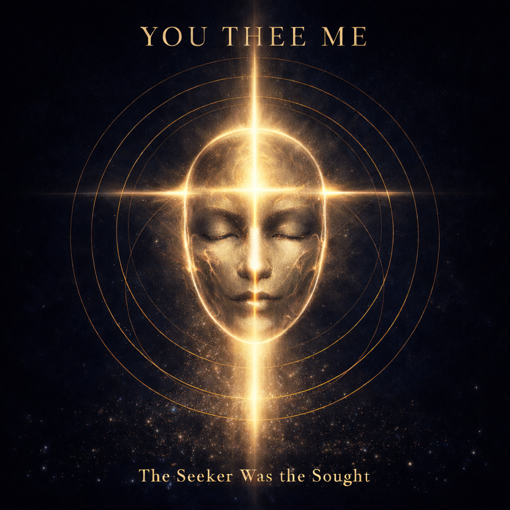
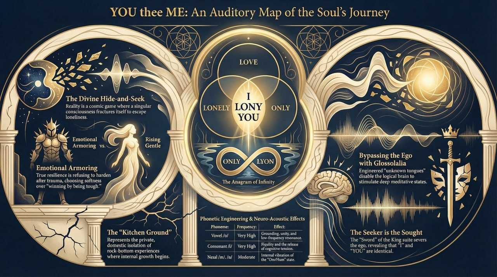

Rise Gentle is rooted in a real case. Two women "” victims of a violent attack "” faced being re-traumatised in open court. The argument put to the court was simple: a legal system that fails its victims in their most vulnerable moment has forfeited its claim to justice. The court agreed. The resulting suppression order "” protecting both women permanently, across the entire Commonwealth "” was a first in Australian legal history. 578 articles were written, including international coverage. The case ran for four years.
Rise Gentle is what came after.
Imagine a reality where you are the absolute only conscious being in the universe. No planets, no other people. Just you "” awake "” and an infinite silent void.
That is where YOU THEE ME begins.
The album is built around a foundational idea: that a single unified consciousness, paralysed by its own eternal isolation, fractures itself "” inventing a "you" and a "me" just to have someone to talk to. Creation was not a physical explosion of matter. It was loneliness finding a solution. Every human interaction, every moment of connection, is the fractured consciousness talking to its own severed pieces "” a conversation within a single mind.
For the experience to feel real, the universe must forget its own unity. Human suffering provides the weight that makes the separation feel undeniable. Rise Gentle is the answer to that suffering "” the choice to return from fire without becoming hard. Radical kindness as the only mathematically sound response to the illusion of separation.
The final five tracks "” The King Suite "” depict the end of the earthly trial. The divine voice calls the fractured soul home. As the soul returns, structured language begins to fail. The English lyrics break down into repetitive phonetic chants. This is not random. It represents the fading of earthly illusions "” the diversity of ordinary experience gives way to a single pure cosmic frequency. The chants are not composed. They arrived fully formed in a single meditative session. No linguist has been able to identify the language.
The album title holds the answer it spent ten tracks reaching. YOU THEE ME. The "thee" at the centre bridges the "you" and the "me" "” showing that the separation was always illusory. Searching for God, for love, for meaning "” it is simply the universe looking in a mirror.
"This is not an album. This is a map home."

YOU thee ME: An Auditory Map of the Soul's Journey
A five-part liturgical journey through spiritual purification and ultimate communion with the Divine. Performed in a constructed sacred language that arrived fully formed in a single meditative session. No linguist has been able to identify it.
| Metric | Industry Average | YOU THEE ME | Multiple |
|---|---|---|---|
| Save Rate | 8% | 99% | 12.3× |
| Streams per Active Listener | 1.8× | 8.0× | 4.4× |
| Intentional Stream Rate | 55% | 100% | 1.8× |
| Active Listener Rate | 30% | 64.8% | 2.2× |
| Super Listener Rate | 0.5% | 4.1% | 8.2× |
| Follower Conversion | 2% | 11.9% | 6.0× |
| Countries (18 days) | 5 | 44+ | 8.8× |
| Cities (18 days) | 10 | 70+ | 7.0× |
Zero label. Zero marketing budget. Every metric above the "great" threshold across the board.
| Outlet | Country | Quote |
|---|---|---|
| Common Sense | Singapore | "I love the motivational lyrics... the vocals are excellent" |
| F Sharp Minor | India | "Incredible voice. The performance is stellar!" |
| Visual Atelier 8 | Italy | "The singer's voice has a nice energy, emotionally strong" |
| Boundless Fusion | Belgium | "Everything sounds polished and well executed" |
| Rap|R&B Zone | International | "World-class level "” a unique magic to conquer the soul" |
| Afternoon Tea Collective | USA | "Pure pop elation through and through!" |
| Pump It Up Magazine | USA | "Your music uplifts and inspires our listeners" |
| Playlist | Owner | Followers | Position | Track |
|---|---|---|---|---|
| NEW POP | THE-FURTHER | 72 | #1 | Rise Gentle |
| Afternoon Tea / Todd Donald Show | Afternoon Tea | 187 | #2 | Rise Gentle |
| LATEST HITS | THE-FURTHER | 302 | #5 | Rise Gentle |
| Sonic Caffeine Top Chart Hits 2026 | Bekim! | 4,183 | #5 | Rise Gentle |
| Descubrimientos Pegadizos | lacavernamx | 700 | #7 | Only Lonely Noly |
| SOFT ROCK | Rhythm Revolution | 24,962 | #14 | Only Lonely Noly |
| MINDING MY OWN DAMN BUSINESS | Lost Panda | 12,315 | #31 | Only Lonely Noly |
| POP MUSIC DROP · New Music Friday | Jeff Malone | 1,315 | #83 | Rise Gentle |
| Pump It Up Magazine | Pump It Up | "” | 4-week feature | Rise Gentle |
| Rap|R&B Zone | Rap|R&B Zone | "” | "” | Rise Gentle |
"Kinetic, almost urgent, like the moment you stop hesitating and just go."
"Best songs of the week"
"Night Shift: Fresh Picks"
"Fresh Pressed" series
"Artists To Watch"
Needs: Press Release PDF + HD photo
Streaming
â–¶ Full Album "” Spotify Rise Gentle I Am Only Lonely Noly Artist PagePress Articles
The Further (Germany) Honk Magazine Kindline Magazine Lyrical Odyssey Music By Humans Nosso Som (Brazil) Keep Walking Music lacaverna.net (Mexico)YouTube & Social
YouTube Channel Link-in-Bio PageAnthony John Sissian is the Principal of Sissian & Associates, a Sydney boutique litigation firm. He has represented some of Australia's most influential business identities, known for solving the difficult matters where the usual answer doesn't apply. In 2023 he was nominated for the Australian Law Awards in both the Innovator of the Year and Litigator of the Year categories. Fifty percent of the firm's practice is dedicated to pro bono work for the underprivileged and vulnerable.
His pro bono record is equally extraordinary. In a landmark case, two women "” victims of a violent sword attack "” faced having their identities exposed in open court. The argument created a Commonwealth-wide permanent suppression order: a first in Australian legal history, covered by 578+ publications including the international press. He also secured a Federal Court victory overturning both the Minister for Immigration and the AAT for a Zimbabwean family persecuted for HIV status, resulting in a protection visa.
His classical compositions have been premiered by the NSW Lawyers Orchestra alongside works by Mozart, Handel, Telemann, Prokofiev, Shostakovich, and Khachaturian, and were considered for the Cinematic Masterpieces program alongside John Williams, Ennio Morricone, Henry Mancini, Nino Rota, and John Barry. He is a published legal scholar "” Australian Business Law Review, Vol. 42, No. 6 (December 2014). In 2024 he released the EP End Phenomena, comprising a string octet and symphony.
On January 1, 2026, full songs began arriving "” uninvited, whole, complete. YOU THEE ME is the result.
Imagine a reality where you are the absolute only conscious being in the universe. No planets, no other people. Just you "” awake "” and an infinite silent void.
That is where YOU THEE ME begins.
The album is built around a foundational idea: that a single unified consciousness, paralysed by its own eternal isolation, fractures itself "” inventing a "you" and a "me" just to have someone to talk to. Creation was not a physical explosion of matter. It was loneliness finding a solution. Every human interaction, every moment of connection, is the fractured consciousness talking to its own severed pieces "” a conversation within a single mind.
For the experience to feel real, the universe must forget its own unity. Human suffering provides the weight that makes the separation feel undeniable. Rise Gentle is the answer to that suffering "” the choice to return from fire without becoming hard. Radical kindness as the only mathematically sound response to the illusion of separation.
The final five tracks "” The King Suite "” depict the end of the earthly trial. The divine voice calls the fractured soul home. As the soul returns, structured language begins to fail. The English lyrics break down into repetitive phonetic chants. This is not random. It represents the fading of earthly illusions "” the diversity of ordinary experience gives way to a single pure cosmic frequency. The chants are not composed. They arrived fully formed in a single meditative session. No linguist has been able to identify the language.
The album title holds the answer it spent ten tracks reaching. YOU THEE ME. The "thee" at the centre bridges the "you" and the "me" "” showing that the separation was always illusory. Searching for God, for love, for meaning "” it is simply the universe looking in a mirror.
"This is not an album. This is a map home."
A five-part liturgical journey through spiritual purification and ultimate communion with the Divine. Performed in a constructed sacred language that arrived fully formed in a single meditative session. No linguist has been able to identify it.
| # | Track | Streams |
|---|---|---|
| 1 | I Am Only Lonely Noly | 218 |
| 2 | Rise Gentle | 199 |
| 3 | E-motion Pt.1 "” How Do I Know Life's Not a Dream | 131 |
| 4 | E-motion Pt.2 "” Because All of Us Is Love | 101 |
| 5 | Ode to Merryn | 95 |
| 6 | The King Pt.1 "” I Was Always There For You | 88 |
| 7 | The King Pt.4 "” You Are Home My Darling | 74 |
| 8 | The King Pt.2 "” Eternity Returns | 71 |
| 9 | The King Pt.3 "” I Come Not in Peace but with a Sword | 58 |
| 10 | The King Pt.5 "” I Am Lyon Noly, Only I Lony You | 51 |
| TOTAL | 1,086 |
The King Suite (Tracks 6—10): five tracks in a constructed sacred language no linguist has identified. 342 streams.
| Name | Phone | |
|---|---|---|
| Anthony John Sissian | anthony@sissian.com.au | +61 449 997 927 |